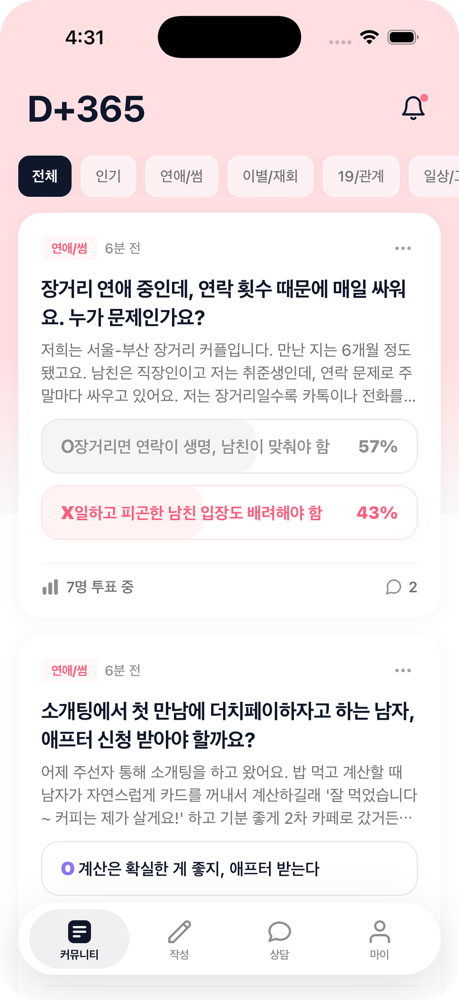
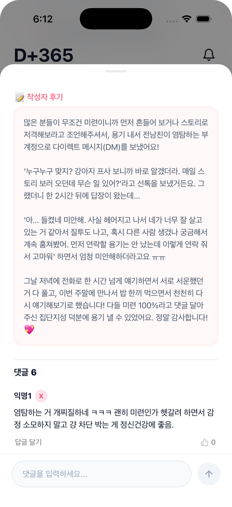

01발견한 문제
연애 고민에 대해 다른 사람의 생각을 듣고 자신의 상황을 이야기할 공간에 주목했습니다.
연애 고민을 나누고 OX 투표로 서로의 생각을 듣는 커뮤니티 앱
연OX는 연애 고민을 공유하고 OX 투표와 댓글로 다양한 생각을 나누는 커뮤니티 앱입니다. 바이브 코딩으로 구현해 앱 출시를 완료했습니다.
연애 고민에 대해 다른 사람의 생각을 듣고 자신의 상황을 이야기할 공간에 주목했습니다.
OX 투표와 댓글이 고민을 나누는 참여의 문턱을 낮출 것이라는 방향으로 서비스를 구성했습니다.
커뮤니티 피드와 OX 투표, 댓글과 작성자 후기를 연결하고 바이브 코딩으로 앱을 구현·출시했습니다.
문제 정의부터 출시까지, 서비스를 만들며 거친 순서대로 담았습니다.
연애 고민에 대해 다른 사람의 생각을 듣고 자신의 상황을 이야기할 공간에 주목했습니다.
OX 투표와 댓글이 고민을 나누는 참여의 문턱을 낮출 것이라는 방향으로 서비스를 구성했습니다.
| ID / 기능 | 요구사항 | 우선순위 |
|---|---|---|
| REQ-01고민 공유와 OX 투표 | 연애 고민을 공유하고 OX 투표와 댓글로 의견을 나눈다. | 필수 |
| REQ-02입력값 검증 | 필수 항목과 입력 형식을 확인하고 수정 위치를 안내한다. | 필수 |
| REQ-03오류와 재시도 | 요청이 실패하면 입력 내용을 유지하고 재시도 방법을 제공한다. | 중요 |
| 기능 | 동작 조건 | 처리 방식 |
|---|---|---|
| 필수 정보 확인 | 필수 입력값이 비어 있거나 형식이 맞지 않을 때 | 해당 항목을 표시하고 수정 위치를 안내 |
| 중복 요청 방지 | 처리 중 동일 요청을 다시 실행할 때 | 중복 실행을 막고 진행 상태 표시 |
| 실패 재시도 | 요청 처리에 실패했을 때 | 입력 내용을 유지하고 재시도 방법 안내 |
| 권한 확인 | 허용 범위 밖의 기능에 접근할 때 | 제한된 동작을 막고 가능한 경로 안내 |
실제 서비스의 권한, 상태, 데이터 보관 기준에 맞춰 기능별 동작을 구체화합니다.
입력 오류 → 해당 항목 수정 → 다시 확인
요청 실패 → 입력 내용 유지 → 재시도


OX 투표와 댓글이 고민을 나누는 참여의 문턱을 낮출 것이라는 방향으로 서비스를 구성했습니다.
시나리오와 예외 상황 점검
문구·레이아웃·상태 확인
바이브 코딩으로 연애 고민 커뮤니티를 구현하고 앱 출시를 완료했습니다.
이 프로젝트에서 배운 점과 다음에 시도할 것을 정리하고 있어요.